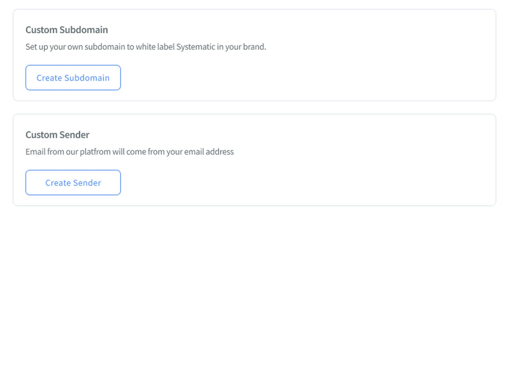

01
Empty first, not a filled form
I needed a first visit that looks like work still to do. The hub now opens on two cards, each with one button: Create Subdomain and Create Sender.
There's no logo slot yet and no badge. Nothing on the page looks live until those jobs are done.
- Tried
- Keeping v1: radios, a logo slot and a Verified row
- Dropped
- The packed form and its one Update button for all three
- Why
- Admins had no create path, and guests would see a finished firm

v1 First visit, looks done

Shipped First visit, empty